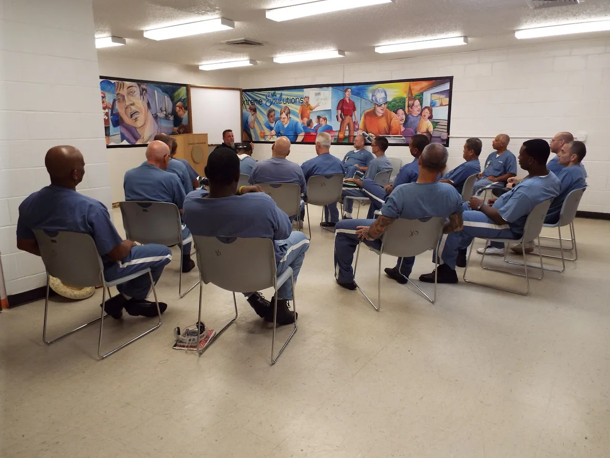
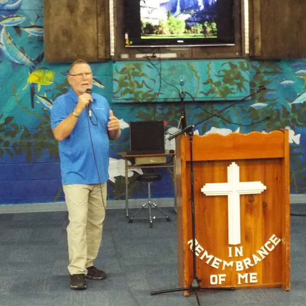

Our story
About us
A 501(c)(3) founded in 2005 so the families of Marion County would not have to meet the same man, unchanged, at the gate.
Xtreme SOULutions was founded by Blaine Whitt to help the families of Marion County, Florida, by working with inmates as they prepare to reenter society.
What is taught
The curriculum is 21 core classes. Each class runs for 12 weeks in 2-hour sessions.
- Participants take three classes each semester and attend weekly family and wing meetings and monthly community meetings. Celebration Sunday services are voluntary.
- Completion depends on the man's schedule, abilities, and aptitude. It generally takes about 2 and a half to 3 years.
- Instructor training and leadership training are available beyond the core.
- Each man's gifts, whether writing, art, or administration, are put to work. Artists have painted the murals throughout the compound.
- We work with Classification, Education, and the TIER program.
- The core curriculum was accredited in 2018 by the FDC clearinghouse. Graduation is noted on the FDC screen.
- Electives include food-manager training and agriculture.

Founder
Blaine's story
Pastor Blaine Whitt has a passion for serving others. He knows that change has to reach the soul of a person, and the inner workings of the system around them. That conviction is why Xtreme SOULutions was born.
Blaine was born in Orange Park, Florida, and raised in Palm Beach County. As a young man he struggled with substance abuse and a hot temper. He often landed on the doorstep of trouble and, looking back, could see that God was still guiding his path.
In 1982 he relocated his construction company to Marion County and trained men and women for the workforce. In 1986 he was born again through Christ. For more than 20 years he taught leadership development in Africa, Honduras, Trinidad, Canada, and across the United States. With his first wife and oldest daughter, he established and operated a Bible school in Warri, Nigeria. He has mentored high school and college students, business owners, and community leaders, and he has shared the gospel in eight countries.
Blaine was the founder and senior pastor of Christian Disciples International. He was troubled by the pattern that led young people, families, and whole cultures into hopelessness: addiction, unemployment, divorce, depression, and the crises that follow. After volunteering in the faith-based program at Marion Correctional Institution for several years, he had the chance to start an in-depth reentry ministry there. In 2005 he formed Xtreme SOULutions with a team that wanted to help people become who God created them to be.
With up to 202 men enrolled in Operation Launch, the schedule stays full. The aim is to spend up to 36 months before an end-of-sentence date developing spiritual, social, and community skills, so that when a man walks out he is ready. Classes include anger management, marriage and family, employment readiness, financial management, and more.
Blaine served on the Florida Faith-Based and Community-Based Advisory Council, the Faith and Justice Coalition, and the Public Policy Institute.
After losing his wife of 45 years, Blaine found a partner in Kimberly, who had already been an XS board member, volunteer, and friend for many years. Between Blaine's two daughters and Kim's two sons, they have 13 grandchildren. They raise chickens and bees, and share eggs and honey when the creatures cooperate.
His greatest passions are loving and serving Jesus Christ, mentoring men in their walk with Jesus, and making a difference in people's lives.
We are passionate about this mission, and we hope you will be too.
